Dataset
The Yelp dataset is a subset of Yelp businesses, reviews, and user data. Yelp has provided this open dataset for use in personal, educational, and academic purposes.
This is a huge dataset which containts:
1) 6,685,900 reviews given by Yelp users
2) 192,609 businesses that are registered on Yelp
3) 200,000 pictures posted by the users
4) 10 Metropoliton Areas
5) 1,223,094 tips by 1,637,138 users
6) Aggregated check-ins over time and other data for each of the 192,609 businesses
7) 1,637,138 Yelp users (Yelpers) and their data like number of fans, review counts and many others.
I chose this dataset as I fould it very interesting and challenging. This datatset not
only contains years, names, dates, review counts but also actual reviews (text) given by the users along with
photographs added in some comments. I wanted to understand the data as much as possible and try to
create some visualizations for every file.
The yelp dataset contains 6 Json Files:
1) business.json - Contains business data including location data, attributes, and categories.
2) review.json - Contains full review text data including the user_id that wrote the review and the business_id the review is written for.
3) user.json - User data including the user's friend mapping and all the metadata associated with the user
4) checkin.json - Checkins on a business.
5) tip.json - Tips written by a user on a business. Tips are shorter than reviews and tend to convey quick suggestions.
6) photo.json -Contains photo data including the caption and classification (one of "food", "drink", "menu", "inside" or "outside").
The data is available online at:
DATASET-URL-HERE
Discoveries & Insights
Below are the Discoveries and Insights about the Yelp dataset
Businesses Count
Count of total number of Open and Closed Business
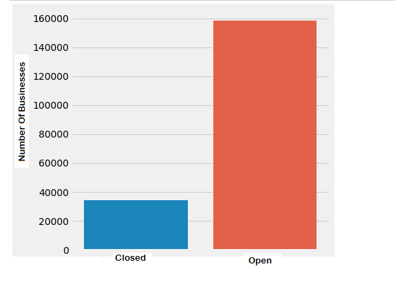
Note: Out of total 192,609 businesses more than 150000 are Open and more than 35000 are Closed.
Description: After understanding the dataset I found that there are some businesses which are closed.
Here is the count of both open and closed businesses.
Businesses Locations
Total number of businesses located at different states in the United States
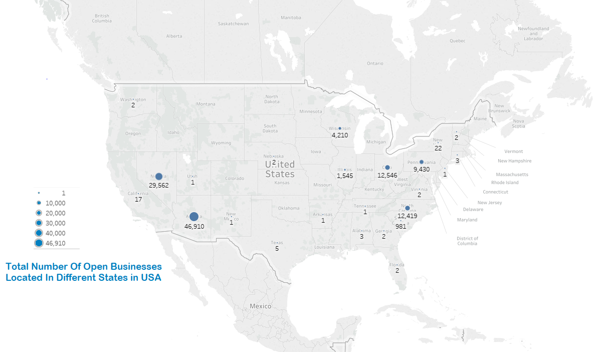
Note: Nevada and Arizona are the states with maximum number of businesses.
Top 35 Cities with Maximum Number of Business
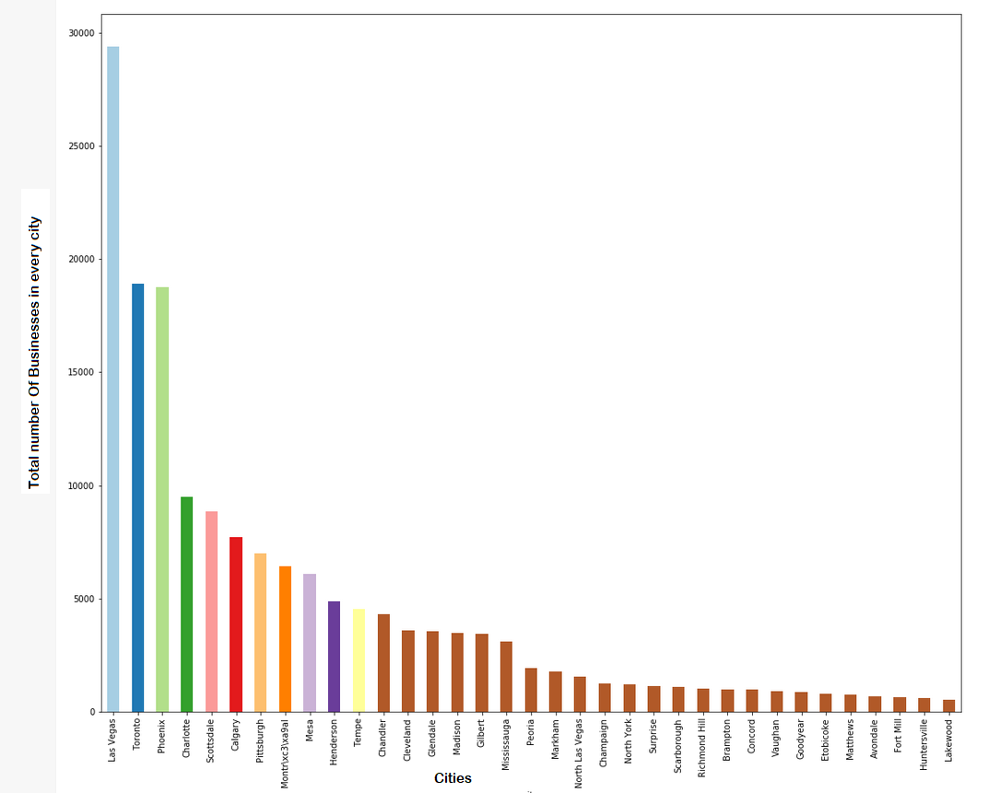
Wow! Las Vegas has the maximum number of businesses.
Description: I have selected Top 35 cities with maximum number of businesses in the dataset.
Each bar in the above visualization represents the total number of businesses in that city.
Lets Dive Deeper!
How many businesses are there in California and what are their Ratings?
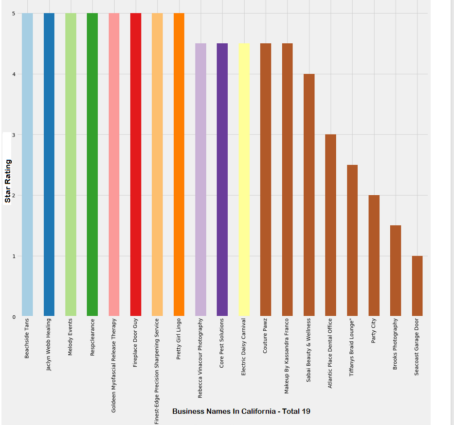
Out of 19 businesses 14 are highly rated (Star Rating >= 4) .
Description: There were total 19 businesses in state California.
Star - Rating Distribution
Count of Each Star Rating given for all the businesses by the users
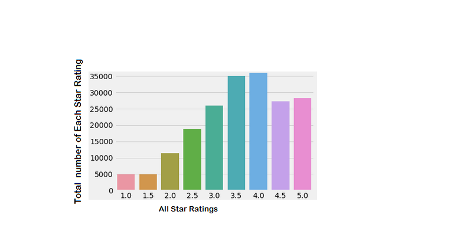
Note : In General 4-Star-Rating is the most frequent star rating given by the users.
Description: Each bar represents the total number of star count for all the businesses
given by all the users in the yelp dataset.
The most frequent words used in the reviews posted for each star rating
1 - Star
2 - Star
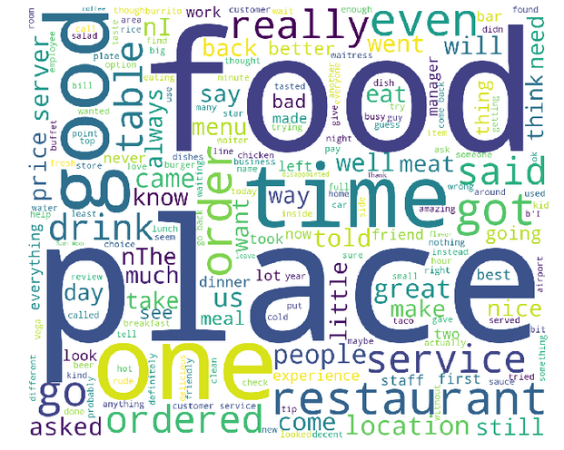
3 - Star
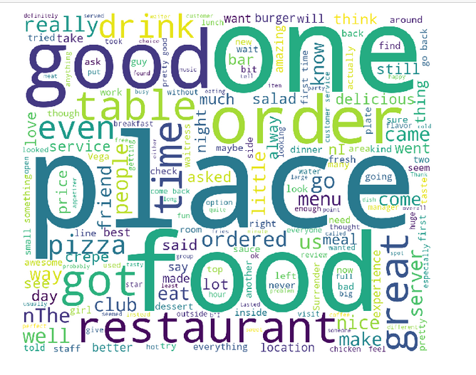
4 - Star
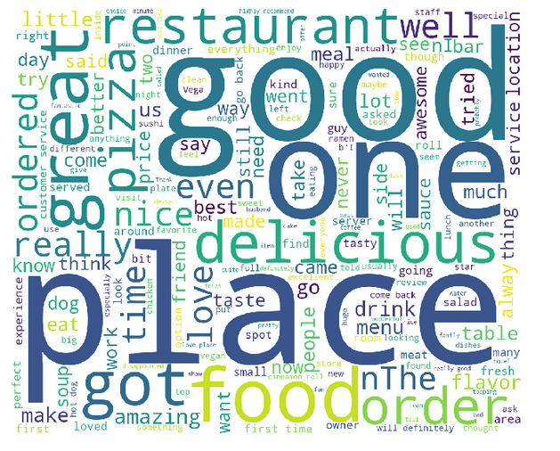
5 - Star
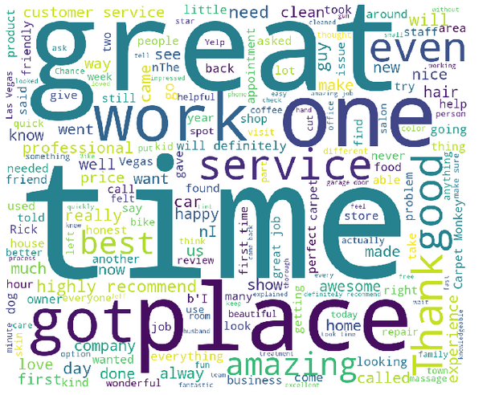
These are the most frequent words used by the yelp users in their comments for each star rating.
Business Categories with Maximum Number Of reviews
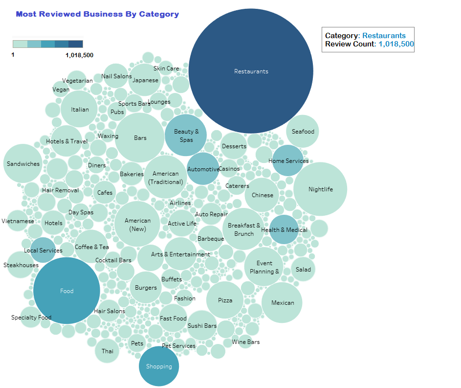
Note: The business category which has recieved maximum number of reviews is - Restaurants
The larger the circle the greater the review count
Description: The above visualization represents the business categories with increasing number
of reviews given by the yelp users. These are the categories for which users have posted more comments.
Restaurants, Food, Shopping, Bars, Nightlife, Automotive, Japanese, Beauty and Spa are some of the top ones.
Most Famous Business Categories in United States
Which are the top business Categories with maximum number of reviews??
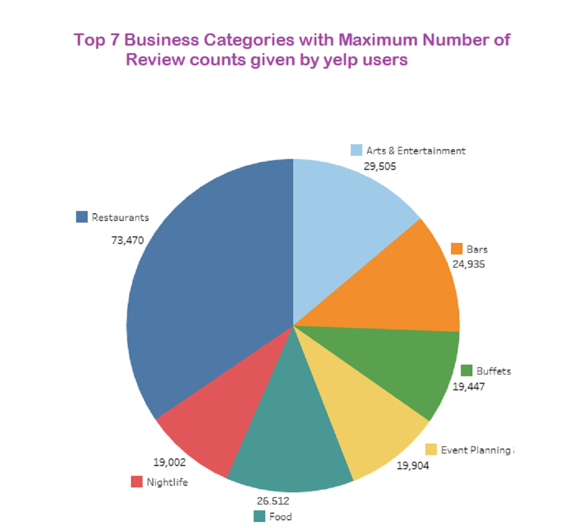
Description: The above pie chart represents the top 7 business categories along with the total number of reviews recieved.
Where are these businesses located in the United States?

Description: I have filtered out top business categories with maximum number of reviews count(top 200).
These are located in 5 states ( Descending order) : Arizona, Nevada, North Carolina, Pennsylvania and Wisconsin.
Some Statictics about the above visualization
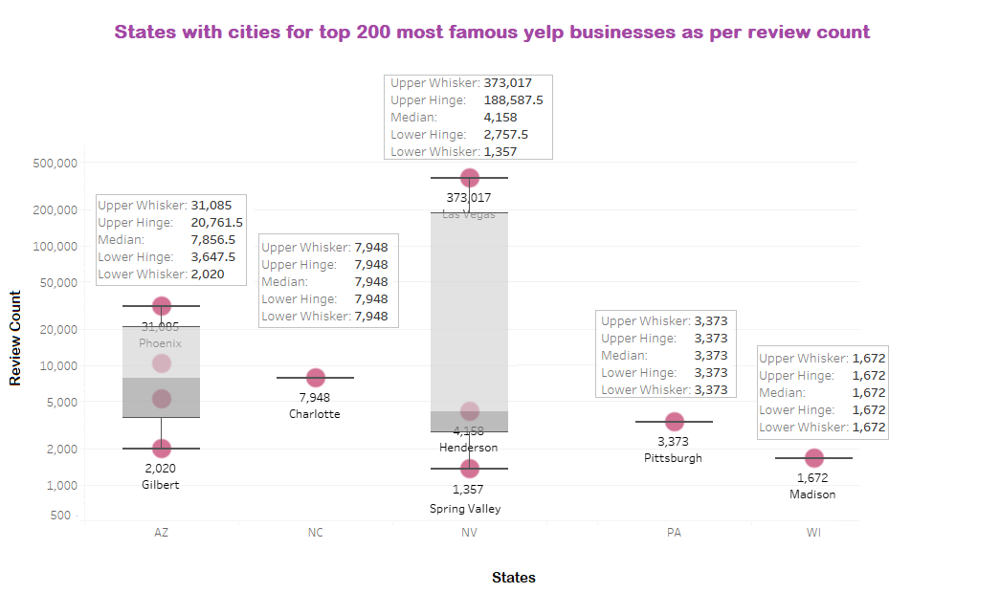
Description: The above box plot also shows the city names (in every state) with minimum and maximum number of review count.
For example, Las Vegas in Nevada has the maximun number of reviews (373,017) while "Spring Valley" has the minimum reviews
for the top reviewed business categories.
Which is the most busy day of the week?
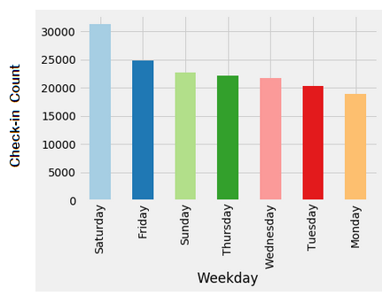
As Expected, its Saturday!
Description: The above graph represents the total number of check-ins reported for each day of the week at various businesses.
Number of photos posted by yelp users
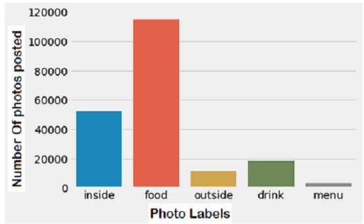
Description: Every photo uploaded by the users has some label. The above bar graph represents the total number of photos
posted for each label. "Food" label has maximum number of photos.
Yelp Users
Who are the Top 20 YELPER !
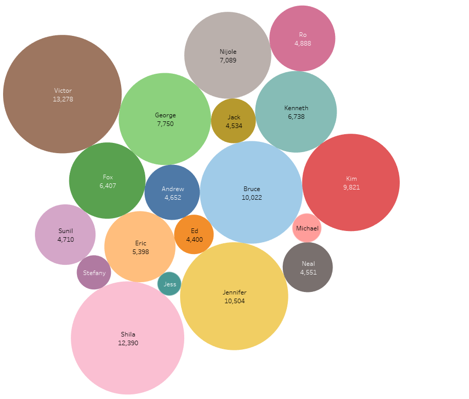
Description: The above visualization represents the names of 20 most frequent and elite users of Yelp.
The larger the bubble the greater the reviews posted by the user. "Victor" has posted the maximum number of reviews(13,278)!
Since when have these top 20 users been YELPING?
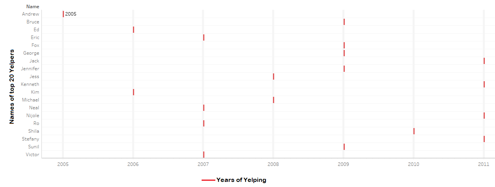
Description: The above visualization shows the years since these top 20 yelp users have been active. For example, Victor has been yelping
since 2007, while Bruce has been using yelp since 2009.
What is the average number of reviews posted by these top 20 users every year?
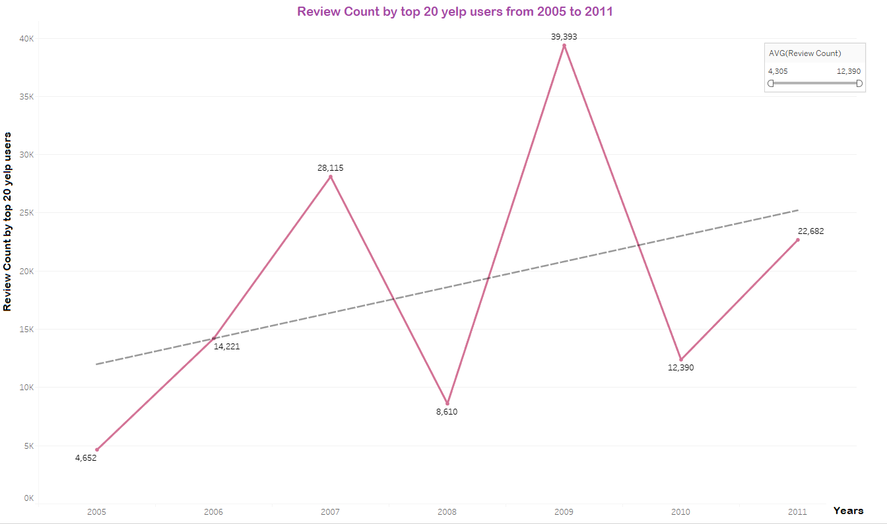
Notice that, 2009 was the year with maximum number of reviews posted by these users. The trend line is upwards for this graph.
Top 20 Yelpers : Number of fans vs Number of review count posted by each user
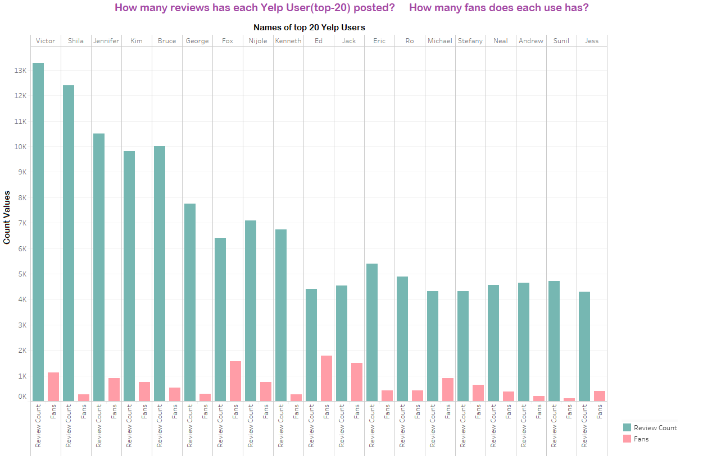
Description: The above graph shows the total number of fans each top 20 user has. It also shows the total number of reviews
posted by each. Ed has maximum number of fans on yelp.
Summary
The above visualizations have shown the general as well as some detailed view of the Yelp dataset.
This was my first Exploratory Data Analysis experience. I have learned new thing during the process.
I used tableau and matplotlib(python library) for this assignment.
Yelp dataset is huge with many files. Data anaysis and data cleaning took the most time. There were some null values which I cleaned using
Python. Also, I merged and grouped( on Business ID) together the review and business files. I have tried to used different
visuaization like maps, graphs, bars, boxplots, bubble charts to understand the data better. I am able to find answers
to most of the questions I had put up in the beginning, however, there's still more to learn!